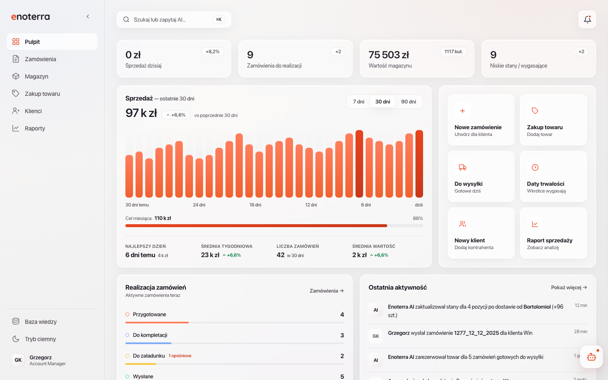
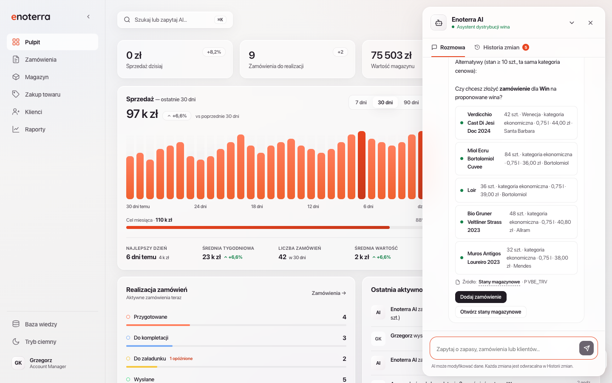
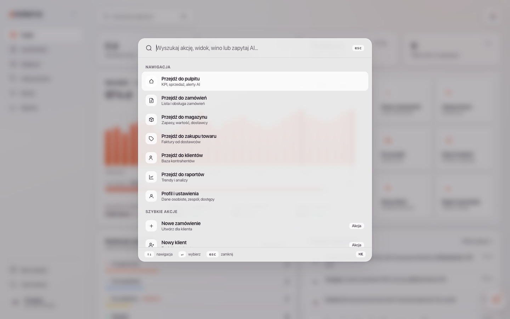

Designer role
- Research, workshop and requirements
- UX/UI audit and accessibility review
- User testing and prioritisation
- AI-assisted prototyping
- Handover package
Case study · Enterprise · Enoterra
Design consulting and platform enhancement
Enoterra — a wine distributor in Poland and Europe — needed product design to fix an ERP built without design input: unclear workflows, confusing order statuses, no home dashboard. I delivered research, interactive prototypes, and a redesign centred on Pulpit (operational dashboard), a three-step order model, and AI-assisted wine substitution.
FigJam — workshop boards, empathy maps and prioritisation with the team. Figma — screens and navigation flows. WCAG plugins — contrast and focus checks on orders, dashboard and reports. UserLook Recorder — moderated validation: click paths and screen changes. Factory AI — AI assistant prompts and confirm‑card logic. Cursor — interactive HTML prototype for two‑round task testing.
Unclear workflows and recurring usability issues. The goal: surface gaps through UX research, define requirements with the team, and validate fixes on core flows before implementation.
What
How
Who
Interactive prototypes built with Cursor and Factory AI — core interactions and AI behaviour validated in code before handover.
Home screen with KPIs, trends, notifications, AI alerts and quick actions for daily tasks — orders, shipments, stock, clients, reports. Pulpit replaces sub-menu hunting; AI entry point on the dashboard.

System-wide light and dark theme — one sidebar toggle, preference saved per user. Charts, glass surfaces and status colours tuned for both modes.
Context-aware on every screen: alerts for delays, low stock and expiry; reversible change log. Wine substitutions return in-stock alternatives in the same price tier — Dodaj zamówienie opens a pre-filled order.

Single search field for navigation, quick actions and AI queries.

Three local statuses — Przygotowane, Wysłane, Anulowane — with warehouse progress in a separate column. Every change via row menu + confirmation. Out-of-stock wine: account manager describes client and quantity in AI chat; system suggests available alternatives and pre-fills the order.
1 · AI chat
2 · Create order
Editable draft
Locked — warehouse proceeds
3 · Later status changes (row menu ·•• · confirm dialog)
Send · cancel · delete draft
WysłaneCancel only if shipment reversed
AnulowaneRemove from active list
Five roles from discovery tested the prototype in moderated sessions — same task scripts as the workshop baseline, plus stress cases for AI and order statuses.
Three deliverables for client handover:
Two moderated rounds with the same five participants (Account Manager, Sales Manager, System Administrator, Director, Owner) and the same five task scripts. Round 1: retrospective walkthrough of the old system — step counts, timings and a post-task frustration rating. Round 2: identical scripts on the interactive prototype, with the facilitator logging clicks, screen changes, errors and warehouse workarounds live.
Steps per substitution — 13 → 8 (chat + pre-filled order). Task 2; averaged across account managers.
Accidental status changes in role-play (Task 3) vs. ~4/week self-reported at baseline.
Morning check-in — 12 → 7 min on Task 1 with Pulpit and AI.
Frustration — mean post-task score (1–5) across all 25 ratings; round 1 vs. round 2.
Each participant ran every script in role. Wording was fixed; order was rotated between sessions to avoid learning bias.
Pre-rollout only — same people who shaped requirements, so baseline numbers could be challenged in the room.
Next steps
I came in thinking AI was the answer. Workshops and testing showed the opposite — warehouse calls, duplicate entry and wrong status clicks were workarounds, not mistakes. Each one became a design rule. We validated structure with the full team before adding automation. Automation works when the workflow is clear. Before that, it just speeds up the mess.
Contact